Field
Report
How might we define the right problem before building the solution — and design a tool that fits how designers actually work?
A brief
not a brief
”How might we facilitate the design process for IDEOers?”
— open, ambitious, and entirely undefined brief
With no predefined problem or direction, I started with observation — spending time with designers, understanding how they captured, organised, and shared their work in practice.
The wall is
the symptom
The wall is not the method
The wall of sticky notes was the result of hours of manual work: translating notes, photos, and memories into something that could be shared with the team. By the time insights made it onto the wall, part of their original context was already gone.
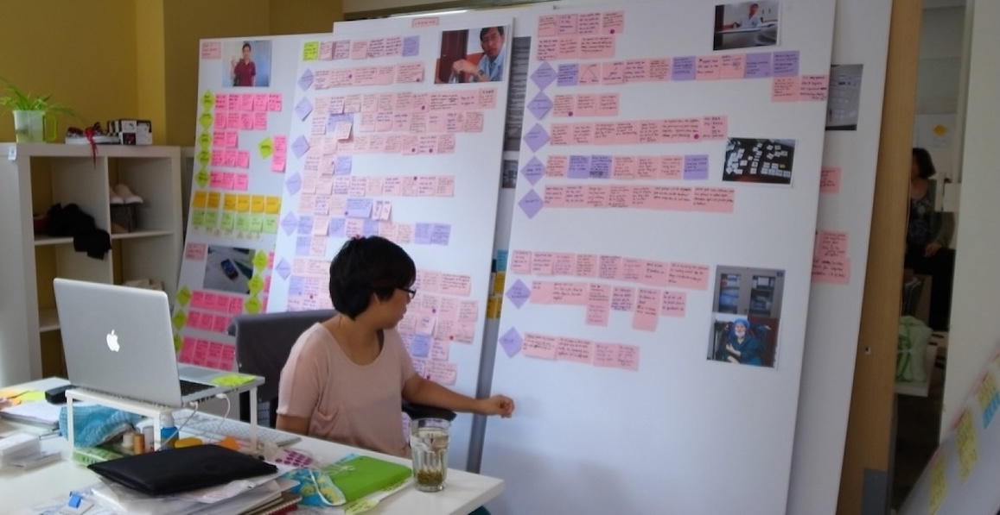
Everyone has their own way of organising research
Every designer had their own system — one lived in Google Docs, another only trusted hand-written notes, a third kept everything as photos. Getting to a shared view of the research meant translating across formats.
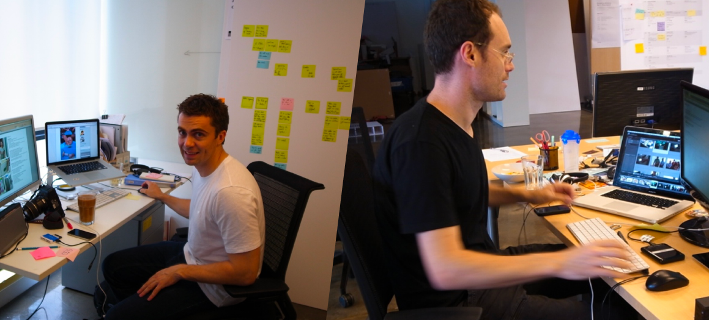
Sharing is the actual goal
Findings only have value when the team can act on them together. The post-it wall was the best synthesis method available — and it required a large physical space and everyone present at the same time. The wall wasn't a design choice. It was the only option available.
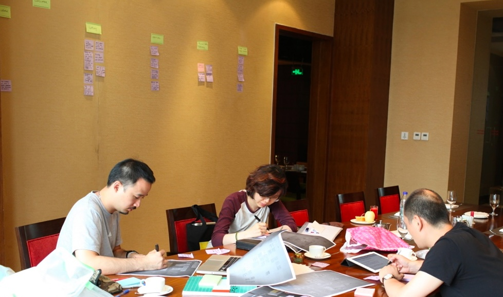
The problem was
the moment
Findings from field research are most valuable when captured fresh, yet the wall of post-it notes is a compromise — slow and difficult to share.
The problem was not the lack of tools, but the lack of support for that moment.
Given this — and my ability to build — a mobile solution became the natural direction.
The moment it
became real
This direction was reinforced when I joined a studio team on a field research project.
The team was trying to capture and organise insights during car rides, or later in temporary meeting spaces. It made the gap visible: the moment when insights were freshest had the least support.
The problem wasn’t theoretical — it was happening in real time, in the middle of the work.
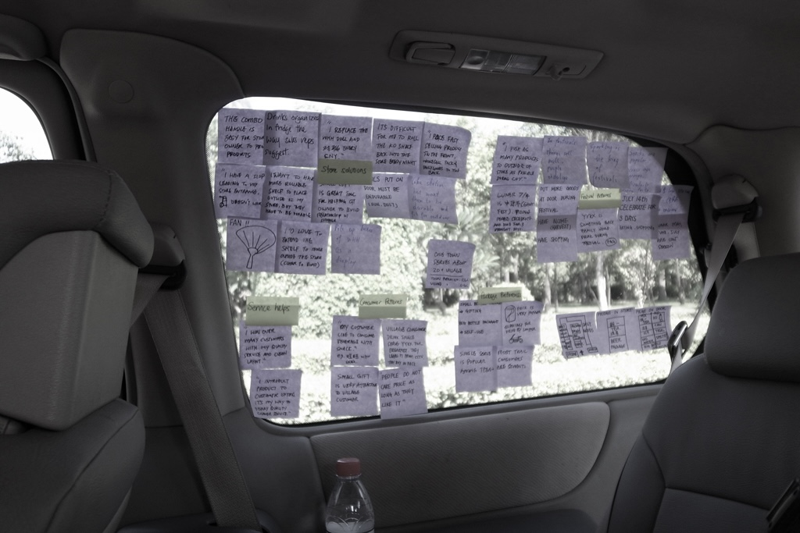
Designed
and built
I designed and built the app myself in Xcode.
The interface was shaped to match how designers already work — so that it felt immediately familiar, without requiring explanation.
The back-end was the harder problem. I built the data model, session logic, PDF generation, and email sharing — no handoff, no prototype.
Testing was continuous, not just a QA phase — feedback from IDEO designers directly shaped the user flow as it was being built.
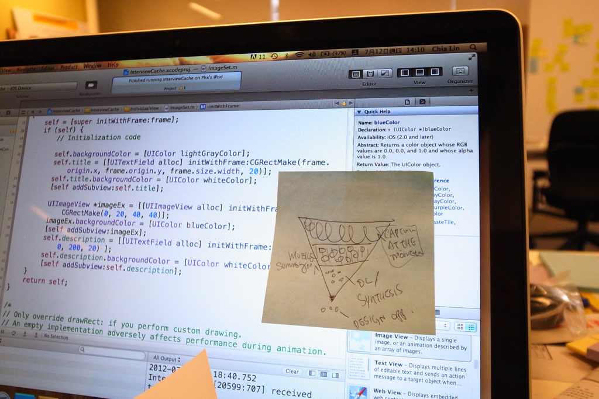
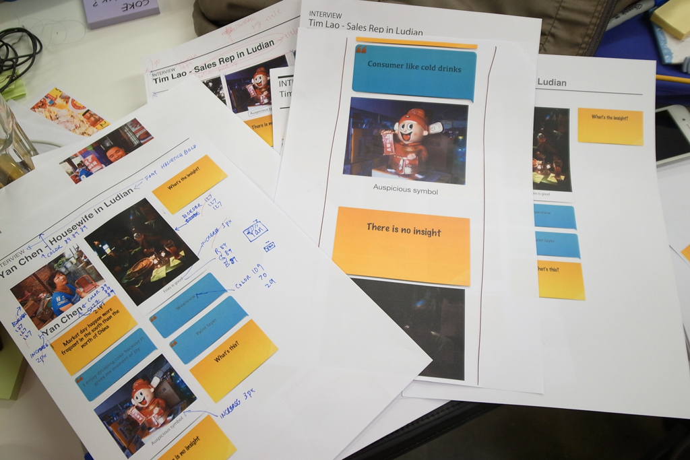
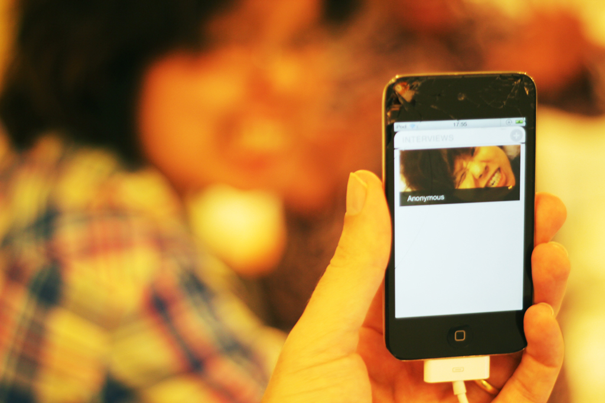
Three problems
One system
I designed a system that mirrors how designers naturally capture research — notes, quotes, and photos — and translated it into a mobile experience.
What used to be fragmented across tools and delayed in process became immediate and structured in one flow.
With one tap, insights could be shared with the team as a formatted PDF — no wall needed, no room required.
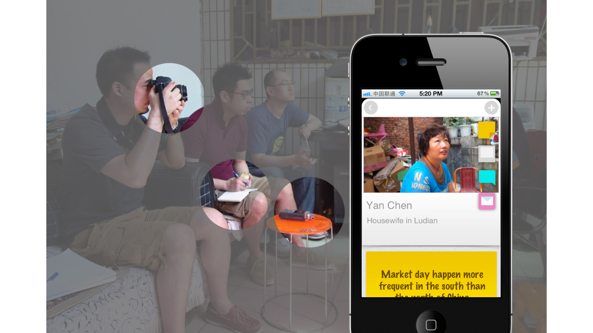
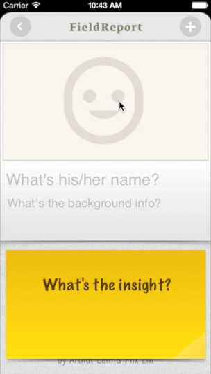
I added deliberate moments of playfulness — small interactions that made the app feel like it belonged in the studio, not just on it.
Ambiguity
turned into product
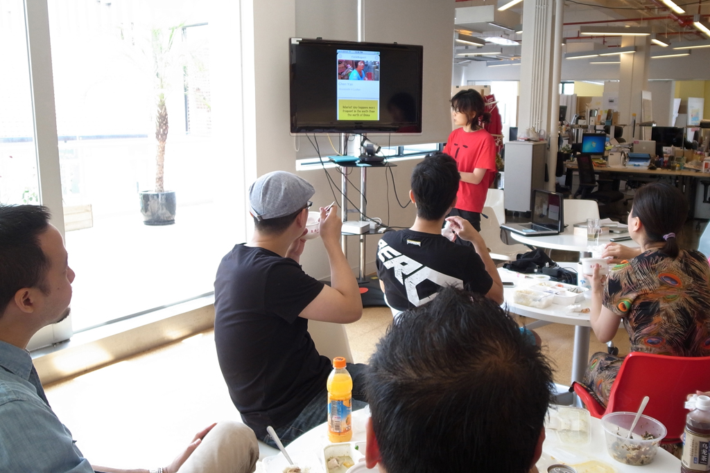
Field Report was adopted as an in-house tool at IDEO and used by design teams on live client work. It was later presented at IxDC Shanghai 2012.
More importantly, it proved that I could define the right problem — and build a product that people chose to use.
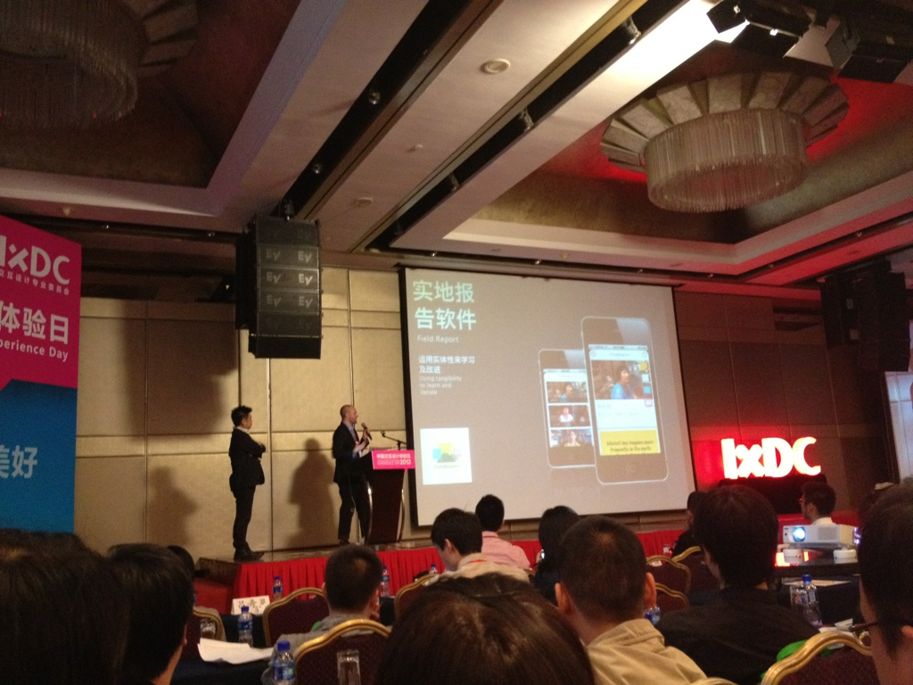
"I like that it jumps you right into building your first interview. I learn what it is as I use it."
— IDEOer
"I have been WAITING for this."
— IDEOer